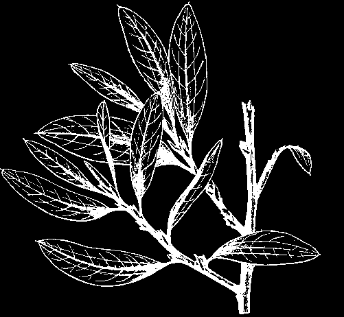
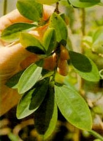
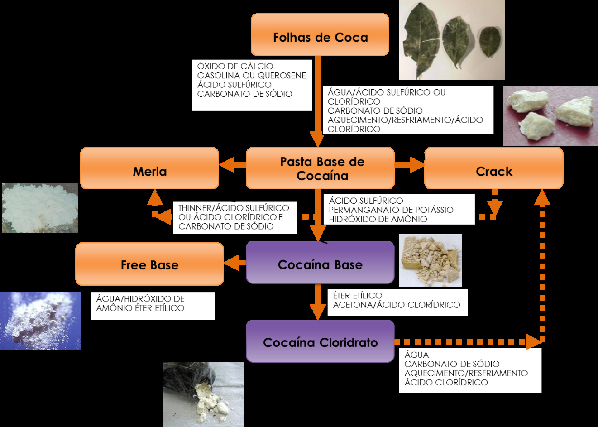
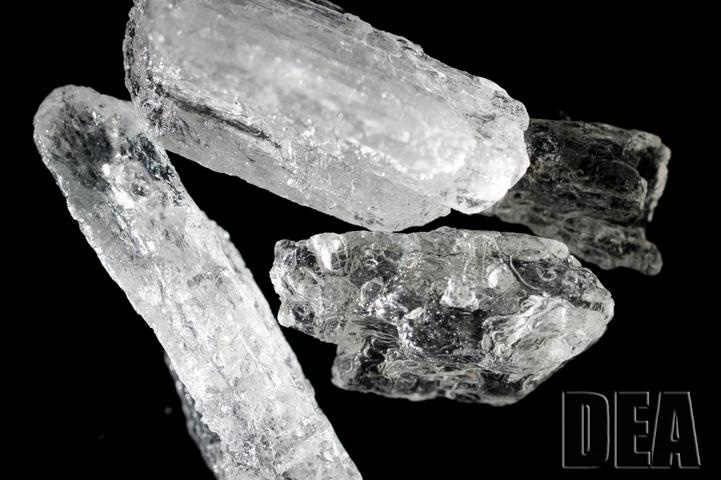
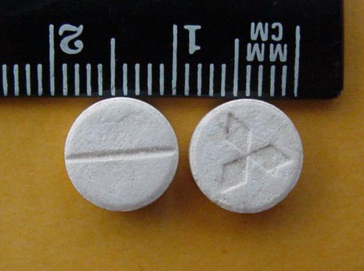

São drogas que provocam elevação da atividade orgânica por aumentar o trabalho do SNC (sistema nervoso central). Os efeitos adversos do uso desse tipo de droga são representados por sudorese, dilatação das pupilas, rubor, tremor, inquietação, irritabilidade, agitação, aumento da pressão arterial, taquicardia.


Fig. 1 - Folhas de coca. A coca, ou arbusto de coca, é uma planta nativa da região dos Andes da América Latina, sendo cultivada principalmente no Peru, Bolívia e Colômbia. Ela foi considerada planta sagrada pelos Incas e ainda hoje é usada pelos nativos da Bolívia e do Peru, que mascam as folhas para combater a fome, aumentar a resistência a grandes jornadas e suprimir a sensação de medo. A planta possui em suas folhas uma série de alcaloides, sendo a cocaína o principal deles. Botanicamente, a coca ou arbusto de coca pertence à família Erythroxylaceae e ao gênero Erythroxylum. Embora sejam conhecidas cerca de 250 espécies de Erythroxylum, somente duas espécies possuem quantidades de cocaína suficientes para sua exploração ilícita, a Erythroxylum coca (variedade coca) e a Erythroxylum novogranatense (variedade novogranatense e variedade truxillense). As folhas de coca pertencentes à espécie Erythroxylum coca, variedade Ipadú, Epadu ou Patu, possuem baixo teor de cocaína e, por isso, não têm sido utiliza das como matéria-prima na produção de cocaína. A planta é nativa da região Amazônica, sendo que os indígenas utilizam suas folhas para mascar. Denominam-se folhas de coca, indistintamente, as folhas de ambas as espécies e variedades de Erythroxylum acima citadas. Em geral, os arbustos de coca atingem uma altura que varia de 1,0 a 3,0 m, dependendo da espécie e da variedade envolvida, desenvolvendo-se melhor em clima úmido, à temperatura de 15 °C a 20 °C e em altitudes de 500 a 2.500 metros. A coca atinge sua plenitude após 18 meses, mantendo-se produtiva por um período de 10 a 30 anos ou mais, sendo a colheita de folhas efetuada de três a quatro vezes por ano. Produzem flores brancas e pequenas, frutos vermelhos em baga e folhas que crescem em grupos de sete por talo. As folhas de coca são ovais ou elípticas, lisas e membranáceas, apresentando duas falsas nervuras levemente curvas e paralelas à nervura central. Suas dimensões variam conforme a espécie e respectivas variedades, bem como em função da maior ou menor exposição solar, podendo ter comprimento de 2,0 a 6,5 cm e largura de até 3,0 ou 4,0 cm. O teor do alcaloide cocaína nas folhas de coca também varia de acordo com as espécies e variedade consideradas. As folhas de Erythroxylum coca, variedade coca, são as que possuem maior teor de cocaína, podendo conter de 0,5% a 1,2% ou mais de cocaína, sendo, por isso, essa espécie a mais cultivada para fins de produção ilícita de cocaína, destacando-se a Bolívia, a Colômbia e o Peru como principais países produtores de folhas de coca. Existem diversos alcaloides minoritários presentes nas folhas de coca, tais como cis e trans-cinamoilcocaína, que podem servir como marcadores em análises realizadas pelos órgãos de combate às drogas, cujo objetivo final é obter informações sobre formas de refino, origem geográfica da cocaína e inter-relação de apreensões (ver adiante no item 2.1.1.4 – Projeto PeQui).
Embora existam métodos sintéticos com altos rendimentos para a obtenção de cocaína, os processos mais comuns das atividades ilícitas envolvem técnicas extrativistas, utilizando as folhas de coca, normalmente realizadas em meio à floresta, com o auxílio de instrumentos rudimentares, utensílios domésticos (baldes, panelas, panos, colheres, etc.) e por pessoas com pouco ou nenhum conhecimento técnico. Os métodos de extração e purificação se baseiam nas características físico -químicas do alcaloide cocaína, e uma série de produtos químicos é usada em processos que têm por finalidade a extração da droga a partir da folha e a purificação da cocaína (refino em graus variáveis). As formas de apresentação obtidas a partir de tais processos são:
90% ou mais.
Como mencionado anteriormente, as características físico-químicas do alca loide cocaína tornam o seu processo de purificação possível usando-se reações do tipo ácido-base: a cocaína em meio básico se comporta na forma de base livre, solúvel em solventes orgânicos (hexano, gasolina, querosene); já em meio ácido, a cocaína se apresenta na forma de sal e, dessa forma, solúvel em água e insolúvel em diversos solventes orgânicos, conforme delineado abaixo: NaOH + HCl NaCl (cloreto de sódio) + H2O Cocaína base (alcaloide) + HCl Cocaína-Cl (cloridrato de cocaína) A Fig. 2 mostra um diagrama de refino “clássico” de cocaína, bem como alguns exemplos de métodos de conversão entre as formas de apresentação, e os reagentes envolvidos no processo.

Fig. 2 - Formas de apresentação da cocaína. Nota-se que as formas de apresentação podem ser interconvertidas facilmente, e o método de conversão pode mudar conforme disponibilidade dos insumos. Atualmente, devido ao controle mais rígido exercido pelo Brasil no comércio de vários produtos químicos usados como insumos em processos de refino ou obtenção de cocaína sal, os traficantes têm diversificado seus métodos de trabalho. Um bom exemplo disso é o método de produção de cocaína cloridrato, conhecido como “la bomba”: o traficante produz um insumo extremamente eficiente contendo ácido clorídrico em altíssima concentração em álcool etílico. Essa solução é adicionada diretamente sobre a cocaína base, obtendo-se a cocaína cloridrato em alto rendimento.
A atividade de obtenção de dados cientificamente embasados com respeito à origem geográfica das drogas apreendidas no território nacional possui uma grande importância no planejamento de ações estratégicas, cujo objetivo final é o combate ao tráfico de drogas de abuso e desvio de produtos químicos usados nessas atividades. Desde o ano de 2007, um dos projetos estratégicos implementados no âmbito da Polícia Federal é o projeto de Perfil Químico de Drogas (PeQui), coordenado pela CGPRE e Ditec, cujos objetivos principais são a determinação da origem geográfica de drogas e o estabelecimento de correlação entre as apreensões. A Polícia Federal tem coletado dados instrumentais de apreensões em diversas regiões do País, usando tanto o parque analítico que a PF dispõe, como novos equi pamentos que são adquiridos visando à realização de análises mais específicas/ precisas. Os Peritos Criminais Federais usam as metodologias desenvolvidas por intermédio de convênio com instituições com programas similares (LPS - Laboratoire de Police Scientifique na França, e o CSP - Chemical Signature Program do DEA, nos Estados Unidos).Entre os dados obtidos podem ser citados: a determinação de substâncias naturais presentes na cocaína (alcaloides minoritários), solventes usados no processo de extração/refino, adulterantes e diluentes químicos.
A Erythroxylum coca encontra-se relacionada na Lista das Plantas Proscritas que Podem Originar Substâncias Entorpecentes e/ou Psicotrópicas (Lista E), de acordo com a Portaria n.º 344/98-SVS/MS, atualizada pela RDC n.º 39 da Anvisa, de 9 de julho de 2012. A cocaína encontra-se relacionada na Lista de Substâncias Entorpecentes de Uso Proscrito no Brasil (Lista F1), de acordo com a Portaria n.º 344/98-SVS/MS.

Fig. 3 - Anfetamina. São substâncias estimulantes, sendo os seus principais representantes a anfetamina e a metanfetamina. A anfetamina foi inicialmente sintetizada em 1887. Em 1933, as anfetaminas sintéticas passaram a ser empregadas no tratamento de gripes e resfriados como descongestionantes nasais, além de moderadores de apetite. Durante o período da Segunda Guerra Mundial, o emprego das anfetaminas entre os combatentes se popularizou, devido às suas propriedades fortemente estimulantes, com o objetivo de vencer o sono e o cansaço. O uso abusivo de anfetaminas desencadeou um processo de dependência e, consequentemente, o tráfico, o que ocasionou a regulamentação do uso das anfetaminas. A) Formas de apresentação das anfetaminas e suas características
B) Formas de uso
C) Questões legais São substâncias de uso permitido, porém controlado no Brasil. Estão incluídas na Lista das Substâncias Psicotrópicas (Lista A3), sujeitas a Notificação de Receita “A”, constante da Portaria n.º 344/98-SVS/MS. A metanfetamina está atualmente incluída na Lista F2 – Drogas de Uso Proscrito, presente na atualização da Portaria n.º 344/98-SVS/MS, a RDC n.º 39 da Anvisa, de 9 de julho de 2012. Exemplos de anfetamínicos comerciais:
Surgiram como substitutos terapêuticos das anfetaminas. São relativamente mais seguros e empregados para diminuir ou abolir o apetite (provocar anorexia), sendo, por isso, utilizados no tratamento da obesidade. Alguns são quimicamente relacionados às anfetaminas e outros são incluídos neste grupo porque apresentam diversos dos seus efeitos colaterais. A) Formas de uso Principalmente oral; o abuso dessas drogas está relacionado à facilidade de consegui-las. Exemplos de medicamentos comerciais:
B) Aspectos legais Estão incluídos na Lista das Substâncias Psicotrópicas Anorexígenas (Lista B2), sujeitos a Notificação de Receita “B2”, constante da Portaria n.º 344/98-SVS/MS. Atualmente, encontra-se proscrita (proibida) pelo art. 48 daPortaria n.º 344- SVS/MS, de 12 de maio de 1998, e pela RDC n.º 58, de 5/9/2007, a associação de anorexígenos com ansiolíticos, diuréticos, hormônios ou extratos hormonais e laxantes, bem como quaisquer outras substâncias com ação medicamentosa. Segundo a Lei n.º 13.454, de 23 de junho de 2017 (publicada no DOU de 26 de junho de 2017), em seu art. 1º: “Ficam autorizados a produção, a comer cialização e o consumo, sob prescrição médica no modelo B2, dos anorexígenos sibutramina, anfepramona, femproporex e mazindol”. Entretanto, até a data de publicação deste trabalho, não existem medicamentos registrados pela Anvisa, por não atender ao disposto na RDC n.º 50, de 25 de setembro de 2014.

Fig. 4 - Comprimidos de ecstasy.
A 3,4-metilenodioximetanfetamina (MDMA) surgiu em 1912, quando um químico alemão pesquisava novos moderadores de apetite para a empresa Merck. Todavia, a nova droga sintetizada foi logo descartada. Somente em 1960, quando o químico americano Alexander “Sasha” Theodore Shulgin pesquisava uma nova substância que aumentasse a libido, os documentos da Merck foram novamente estudados e a MDMA passou a ser conhecida como a “droga do amor”, sendo posteriormente denominada “ecstasy”.
A 3,4-metilenodioxianfetamina (MDA) foi sintetizada pela primeira vez em 1910 por Mannish e Jacobson. O mecanismo de ação do MDA é similar ao do MDMA, entretanto, possui efeitos mais intensos e duradouros. O ecstasy (também conhecido como Adam, X e XTC), no entanto, só passou a ser mundialmente conhecido e utilizado como droga de abuso no final da década de 80 no balneário espanhol de Ibiza. A) Formas de apresentação do ecstasy e características O ecstasy é normalmente comercializado sob a forma de comprimidos, de formatos e cores diversas, os quais usualmente apresentam chancelas grafadas em uma ou ambas as faces. B) Formas de uso Via oral, por ingestão dos comprimidos. C) Aspectos legais A MDMA e a MDA encontram-se incluídos na Lista das Substâncias Psicotrópicas de Uso Proscrito no Brasil (Lista F2), constante da Portaria n.º 344/98-SVS/MS.